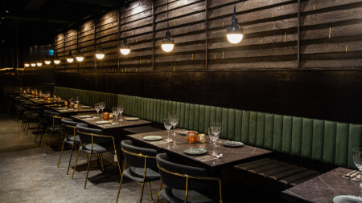
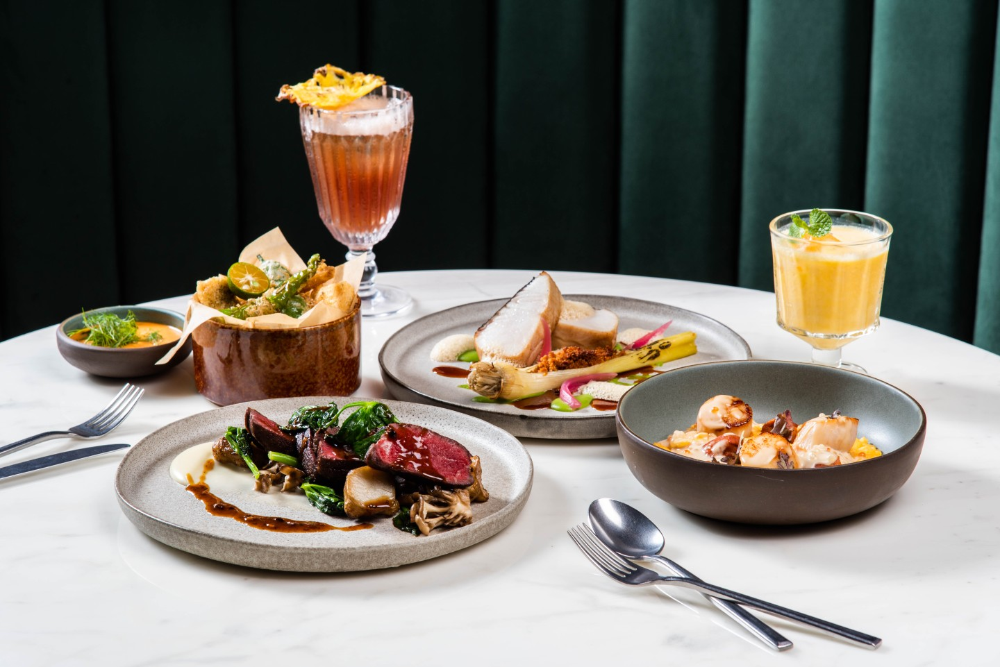

Cantine Marais瑪黑餐酒
低調質感風
「Cantine Marais」距離捷運忠孝敦化站7號出口8分鐘路程。 瑪黑餐酒是ARAIS瑪黑家居與旗下柏林茶館連同打造的餐飲業。外觀深邃神秘的黑色大門， 工業風刷舊的金屬片拼接圍住一整面牆，搭配藍光LED 招牌非常顯眼。

用餐空間大致上可分成三個區塊，共通點都是整體幽暗浪漫氣息，鏡面反射出整列直線座位區，穿透視野讓空間無礙， 透過櫥窗能看到主廚們烹調的專注背影，垂直延伸到吧台區， 刻意降低檯面高度讓賓客更能與Bartender互動。以黑色牆面搭配穩重深沉的墨綠色系， 暈染黃光投射下更顯朦朧情調之美，再走進最深處的調整包廂區更加隱密。

瑪黑餐酒以巴黎最時尚風格的瑪黑區為名，體現在料理手法之展現，運用法式美學注入餐點擺盤，結合本土食材， 將傳統台式料理以西式手法打掉重練，或是把經典義式料理參雜本土元素。不僅如此，主廚還將東南亞特色美食也帶入之中， 在創新之外更重要的是滋味更上一層，從沙拉、開胃菜、義大利麵、燉飯到排餐，都讓人難以抉擇除了歐盟認證的有機茶飲之外， 調酒也充滿巧思，有以水果入料的酒款，還有加入P&T柏林選茶的茶系調酒，以及臺虎精釀生啤、紅白酒、氣泡酒都有